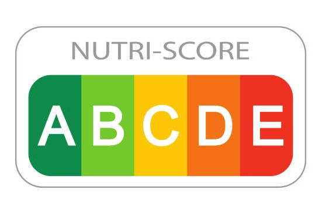
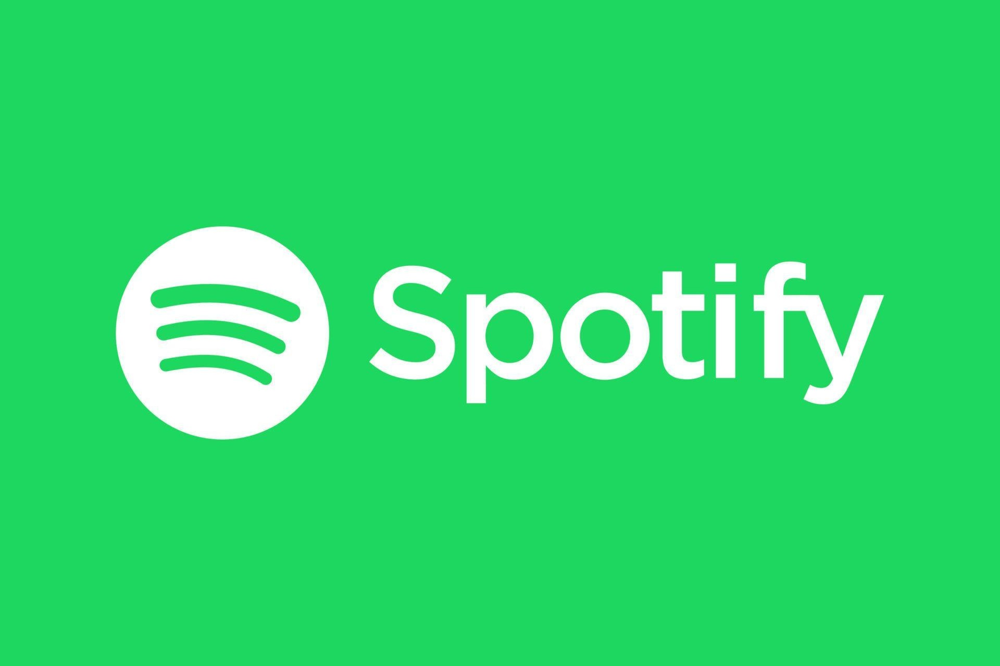
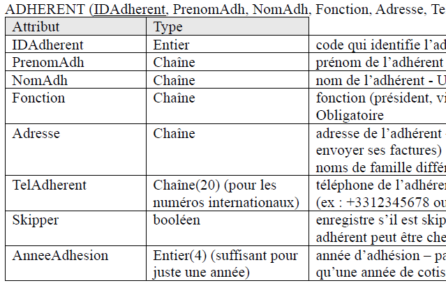
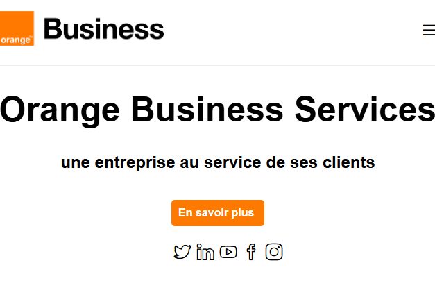
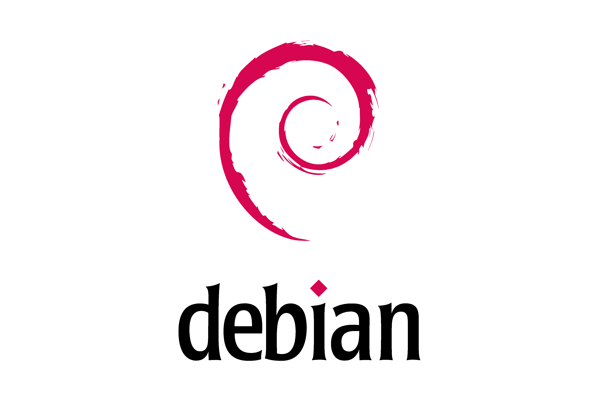
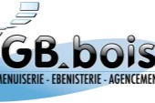
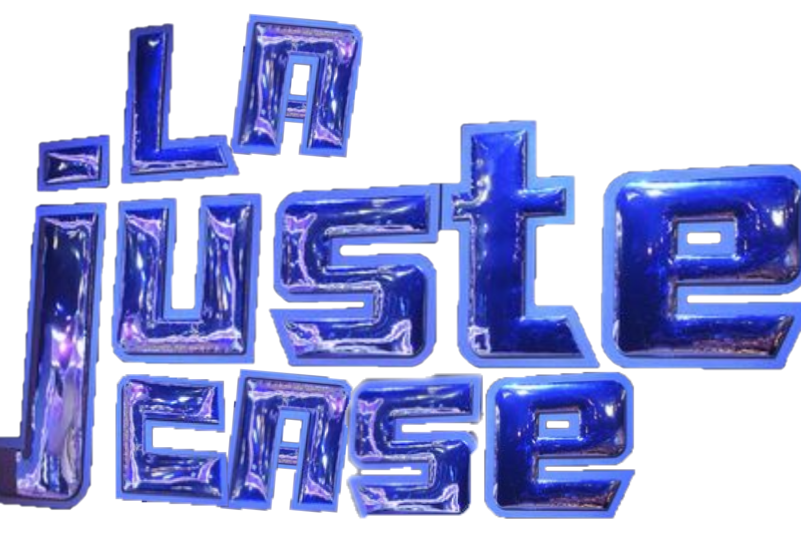
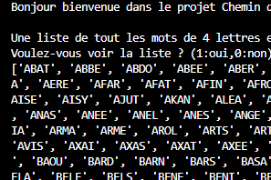

Mes Projets
Mes Projets Académiques
SAE Réseau

Sensibilisation au Nutri-score
Nous avons fait une étude sur les Nutri-scores pour sensibiliser et comprendre l'effet des aliments sur notre organisme. Nous avons approfondi notre étude sur les produits de type 'biscuits and cakes' provenant des États-Unis.

Analyse musicales de Spotify
À partir des données musicales de Spotify, nous avons fait une étude analysant les genres de musique en fonction de leur énergie, leur vitesse de parole, leur dansabilités et de leur volume sonore ressenti.
Chatbot
Nous avons eu le projet de concevoir un chatbot capable de répondre à des questions de culture générale. L’objectif était de développer une solution simple et interactive, tout en mettant en pratique l'enregistrement des données.

L'association Le Tourmentin
Ce projet consiste à gérer les activités d’une association organisant des sorties en voilier. L’objectif était de concevoir une base de données sur les informations relatives aux adhérents, aux sorties programmées ...

Site web d'Orange
Orange Business Services nous a contacté pour leur faire un site web accessible aux élèves de troisième. Alors, du cahier des charges jusqu’à l’interface, notre équipe a réflechi, cherché, réalisé un site web à leur image.

Installation d'un poste
Ce projet d'installation d'un poste de travail et des outils de développement a été fait pour nous montrer les différentes étapes. Ceci avec la mise en place de Debian (12,13) et d'IDE (NetBeans,IntelliJ IDEA)
Mes Projets Personnelles

Site Web GB Bois
L'entreprise GB Bois m'a contacté pour que j'améliore le site de leur entreprise. Avec la gérante, nous sommes toujours en contact pour améliorer son site.

Jeu du trésor
Inspiré du jeu "Le juste prix", il m'est venu à l'esprit de faire un petit programme similaire pour une chasse au trésor. Le trésor est caché dans un tableau où il faut le retrouver mais gare aux pièges et au temps passé.

Chemin de mots
Pour mon premier petit projet, je n'y connaissais encore rien mais je voulais m'amuser. Ce programme se base sur la ressemblance de mots à 4 lettres. Il trouve les parties communes du mot de l'utilisateur selon des critères.